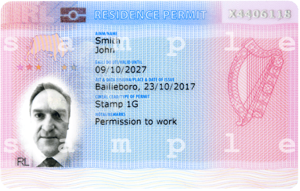
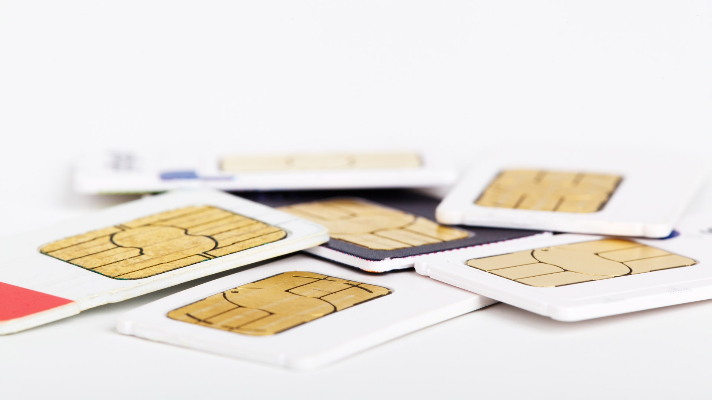
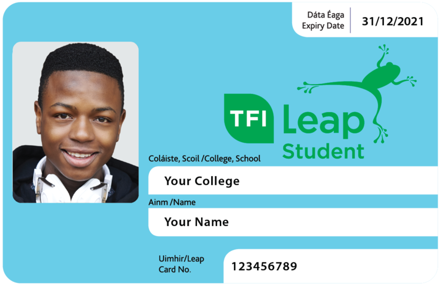
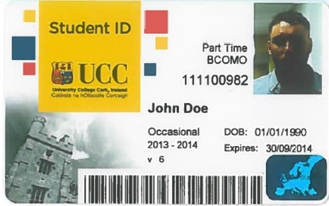
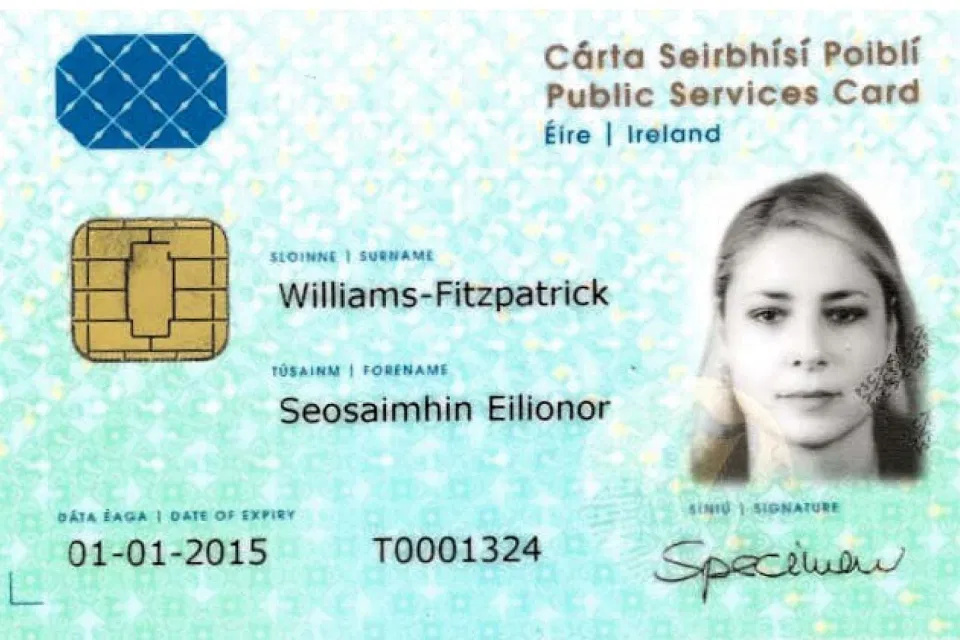
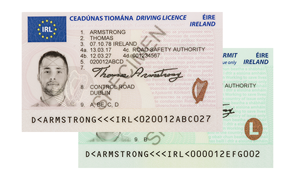

Important Documents and IDs
In this section, we will talk about the documents and IDs you must have in Ireland. We will talk about things in the sequence.
Irish resident permit or IRP card
At the moment, you will go through the immigration at Cork Airport, the immigration officer will tell you to get an appointment for an IRP card. It is an official document that mentions your residency status and will help you re-enter Ireland when you travel abroad.
An Irish Sim card
You can buy an Irish sim card in any general store. The best option for tight budget students is GoMo and 48.
Student Bank Account

We do not need to explain this. Ireland has many banks, but most students usually go for Allied Irish Bank(AIB).
Student Leap card
It is a travel that will help you to use the Cork bus service at discounted rates. You have to top-up the card to do that.
Student ID card
You also should get an appointment for a Student ID card, as it will help you use the library, get print at a cheap rate(you need to add money to your ID card to do that), and you can also get some discount in the market.
PPSN or Personal Public service Number
This is one of the most important and also the trickiest one. You must have this number if you want to work anywhere, including part-time and full-time work, an Irish Driving License, a Credit Card, and many other useful things. You should also keep in mind that you can not apply for PPSN unless you have a solid reason with sufficient proof.
A driving License
Many jobs you will apply for here will need you to have a driving license. After successfully getting PPSN(If you are lucky), you can apply for a new Driving License or exchange your full foreign driving license.
All of the useful and relevant links are in the right section for you to check.